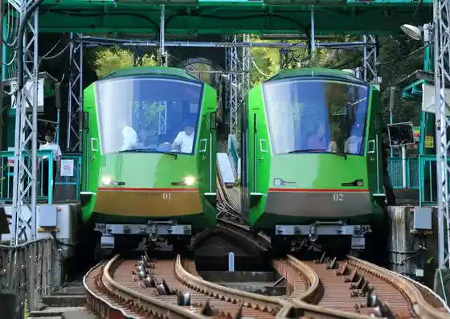
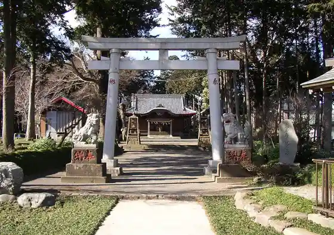
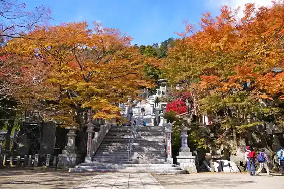
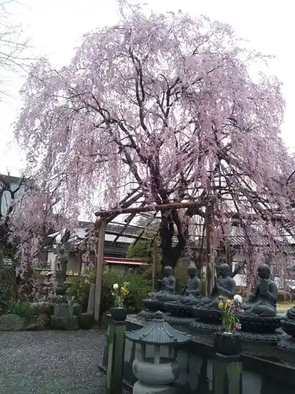

Oyama Ga Buruka
Isehara, Kanagawa · 0463-95-2040 · Official / source link

Ue Kasuya Shrine
Isehara, Kanagawa · Official / source link

Oyama Afuri Shrine
Isehara, Kanagawa · 0463-95-2006 · Official / source link

Hora Masa In
Isehara, Kanagawa · 0463-93-0308 · Official / source link

Hyuga Kusurishi (Hyuga Yama Hojo Bo)
Isehara, Kanagawa · 0463-95-1416 · Official / source link
Ame Takafumi Ko (Toroku Yukei Bunkazai Yamaguchi Ie House)
Isehara, Kanagawa · 0463-95-0002 · Official / source link
Hyuga Chiku Higan Hana
Isehara, Kanagawa · 0463-73-7373 · Official / source link
Kuahausu Yamagoya (Isehara)
Isehara, Kanagawa · 0463-92-7750 · Official / source link
Hyuga Keikoku Masu Tsuriba
Isehara, Kanagawa · 0463-94-7220 · Official / source link
Miharashi Dai (Oyama Haikingu)
Isehara, Kanagawa · Official / source link
Niju Taki
Isehara, Kanagawa · Official / source link
Oyama Tera
Isehara, Kanagawa · 0463-95-2011 · Official / source link
Iyori Toge
Isehara, Kanagawa · Official / source link
Fudomyo
Isehara, Kanagawa · Official / source link
Mizunomi Mi Jizo
Isehara, Kanagawa · Official / source link
Hashi no Tamoto no Sekihi
Isehara, Kanagawa · Official / source link
Koma Sando
Isehara, Kanagawa · 0463-73-7373 · Official / source link
Mujo Yama Jo Hotsugan Tera
Isehara, Kanagawa · 0463-94-3954 · Official / source link
Fujimidai
Isehara, Kanagawa · 0463-73-7373 · Official / source link
Fufu Sugi
Isehara, Kanagawa · Official / source link
Hyuga Yama
Isehara, Kanagawa · Official / source link
Oyama Tera Eki
Isehara, Kanagawa · Official / source link
Togaku Bo
Isehara, Kanagawa · 0463-95-2038 · Official / source link
Isehara Dai Shrine
Isehara, Kanagawa · 0463-96-1611 · Official / source link
Sannomiya Hihi Ta Shrine
Isehara, Kanagawa · 0463-95-3237 · Official / source link
Yoshikawa Jozo
Isehara, Kanagawa · 0463-95-3071 · Official / source link
Nippon Kure Shageki Kyokai Kanagawa Prefectural Isehara Shageki Ba
Isehara, Kanagawa · 0463-92-7882 · Official / source link
Isehara Eki Tourist Information
Isehara, Kanagawa · 0463-95-5333 · Official / source link
Isehara Shibuta Kawa Kahan
Isehara, Kanagawa · 0463-94-4729 · Official / source link
Oyama Afuri Shrine no Yamazakura
Isehara, Kanagawa · 0463-94-4729 · Official / source link
Oyama Shindo Soi no Okamezakura
Isehara, Kanagawa · 0463-94-4729 · Official / source link
Otsu Ya Kyarabuki Honpo
Isehara, Kanagawa · 0463-95-2704 · Official / source link
Tofu Ryori Tanjo no Mise Wa Naka So
Isehara, Kanagawa · 0463-95-2028 · Official / source link
Tofu Tokoro Ogawa Ie
Isehara, Kanagawa · 0463-95-2270 · Official / source link
Oyama
Isehara, Kanagawa · Official / source link
Oyama Tofu Ryori Yume Kokoro Tei
Isehara, Kanagawa · 0463-91-1551 · Official / source link
Wa Zen Shokoku
Isehara, Kanagawa · 0463-92-1919 · Official / source link